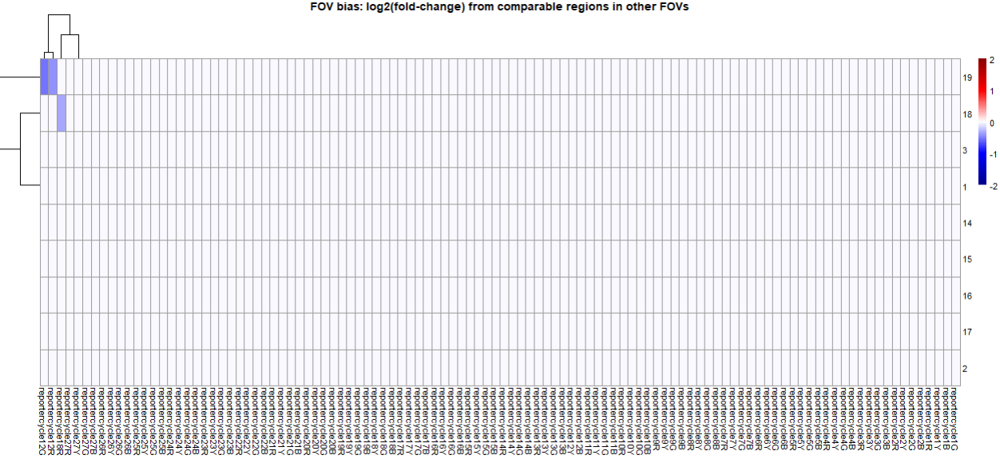

![]()
FOV QC
Background
In most experiments, all FOVs will perform comparably, and data analyses need not consider FOV as a relevant variable. However, FOVs can suffer a variety of technical effects, sometimes causing obvious bias in the data (e.g. all the cells in an FOV will be clustered as the same cell type), and sometimes more subtle. We recommend that FOV QC be performed early in analyses. Should misbehaving FOVs be detected, we almost always recommend they be excluded.
Here we’ll describe known FOV-level artifacts, and we’ll show use of R code for detecting impacted FOVs.
This approach, which looks only at gene expression data, compliments a tool we’ve developed for detecting FOVs with registration failures. This other tool will appear on the CosMx Analysis Scratch Space in June 2024.
FOV artifacts
All known FOV artifacts act by modulating our ability to detect reporter probes. In CosMx SMI, the reporter probes contain a barcode that is read out across reporter cycles. At each reporter cycle, a given probe will either contain one of four colors or an empty slot. Among FOV artifacts, most commonly we see a single reporter cycle in which all 4 colors of probes lose efficiency; that is, 4 “bits” of our color barcode are impacted, and in turn, so are all the genes sharing those barcode bits.
Thus we see phenomena like the below, where genes with impacted bits are muted in specific FOVs (top left), while other genes behave normally:
We have observed the below root causes of FOV artifacts:
Registration failure:
The images from each reporter cycle must be “registered”, i.e. aligned to the images from the other cycles, in both horizontal and vertical position. This process can go wrong in various ways, but all with the same impact: the barcode bits from that reporter cycle are assigned to the wrong positions, and they can no longer be used to identify the RNA transcript they came from. This phenomenon drives down expression for all genes with a barcode bit in the impacted reporter cycle. The CosMx instrument performs 8 “cycles” (as opposed to “reporter cycles”) of data acquisition for every reporter cycle and therefore barcode position; registration failure can impact a reporter cycle across one or all of these cycles, causing either a slight decrease or a total loss of signal for the impacted genes.
Autofluorescence:
If the tissue in an FOV is autofluorescent, it can make fluorescent signal from CosMx reporter probes harder to detect. When this happens, all genes with barcode bits in the impacted color will be harder to detect. At the same time, they will suffer higher rates of FalseCode style background events - i.e., their barcode will more often be spuriously observed in the absense of hyb probes for the gene.
Loss of signal:
An FOV with unusually low signal is an indicator of something having gone wrong with data collection. To be cautious, we recommend removing FOVs with any substantial loss of signal.
Approach to FOV QC
First, we’ll apply a permissive look at FOV’s signal strength, throwing out FOVs with >30% loss of signal across most of their spatial span.
Then we’ll look for FOVs with biased gene expression profiles. Because all known artifacts impact reporter cycles (each containing 4 “bits”, i.e. reporter cycle/color pairs), we will look for artifacts at the level of bits, not genes. Specifically, for each barcode bit, we’ll look for FOVs where genes using the bit are underexpressed compared to comparable regions elsewhere. And we’ll fail reporter cycles where multiple bits look bad.
Technical details:
We place a 7x7 grid across each FOV. For each grid square, we find the 10 most similar squares in other FOVs, with “similar” being based on the square’s expression profile. (We also only accept one neighbor per other FOV.)
Then we score FOVs for signal loss. For each square, we compare its total counts to its comparator squares. For each barcode bit, this gives us 49 contrasts. If most (75%) of an FOV’s squares have low total counts compared to comparators, we flag the FOV.
To score FOVs for bias, we use a similar approach. For each barcode bit, we take the genes using the bit, and we contrast their expression in the square vs. in the average of the 10 most similar squares elsewhere. When an FOV’s grid squares consistently underexpress the relevant gene set, we flag the FOV.
Below we demonstrate this approach, looking at a tissue with particularly dramatic FOV effects.
On the left, we plot expression of a single barcode bit (c12B = reporter cycle 12, color Blue) impacted by FOV effects. FOV 19 has almost entirely lost expression of the genes from this barcode bit, and FOV 16 looks as though it could be losing some expression.
On the right, we show the results of our FOV QC approach: for a 7x7 grid within each FOV, we see estimated change in barcode bit expression compared to similar grid squares in other FOVs. FOV 19 still stands out as an obvious failure. In contrast, the low expression in FOV 16 is shown to be similar - sometimes higher, sometimes lower - than biologically similar regions elsewhere in the tissue. FOV 22 now stands out as having perhaps increased expression of the bit, but the high log2(fold-changes) (red squares) appear to follow spatially smooth biology and not the sharp FOV borders, suggesting we needn’t worry about technical artifacts in this FOV.
Our tool summarize our output across FOVs x barcode bits with plots like the below:

In this example, 2 barcode bits from reporter cycle 12 were flagged, as was one bit from reporter cycle 18. Because all known artifacts impact reporter cycles, not the individual colors within them, we only flag FOVs in which at least two bits/colors from a single reporter cycle appear anomalous. This rule helps avoid flagging FOVs due to biological variability. So in this example, FOV 19 would be flagged since it had 2 bits flagged in reporter cycle 12, whereas FOV 18 would not be flagged since it had only one bit flagged in reporter cycle 18.
Code
Vignette for FOV QC can be found here with functions stored under _code/FOV QC folder in the repository. The gene-to-barcode mappings needed by this approach are saved in the same folder.
We advise this approach be applied separately to each slide or tissue in a study.
This approach is new as of April 2024, and as-yet lightly tested. Use thoughtfully.